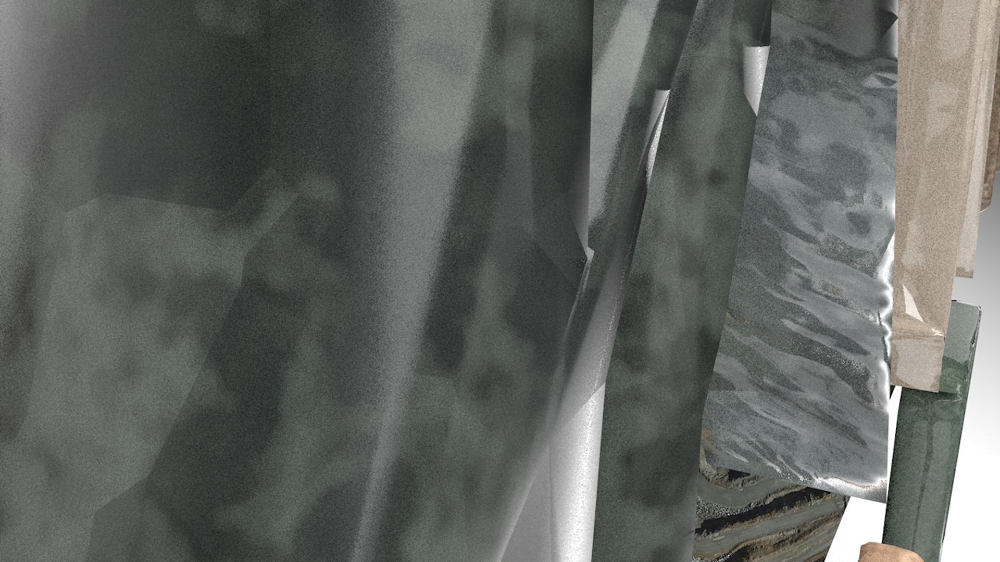
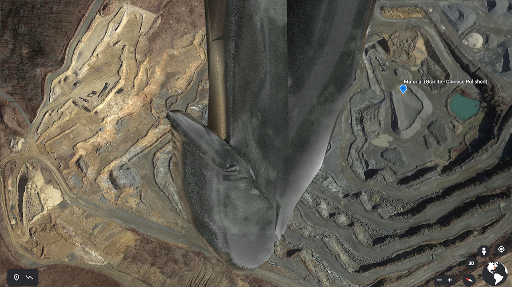
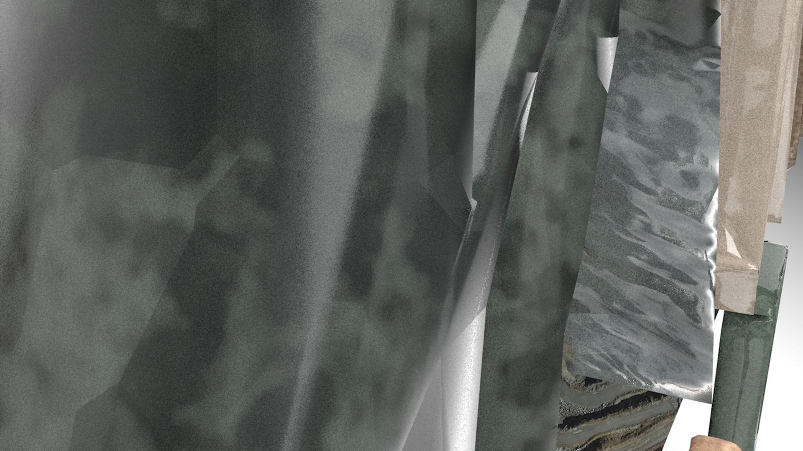
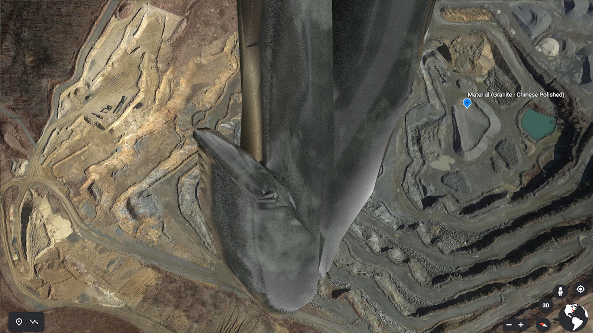
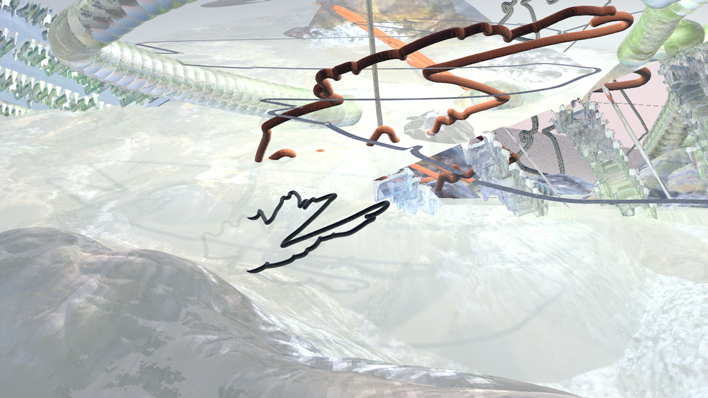
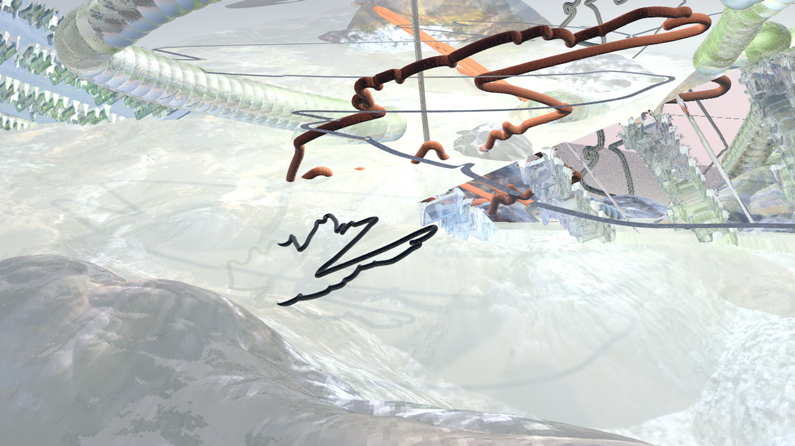
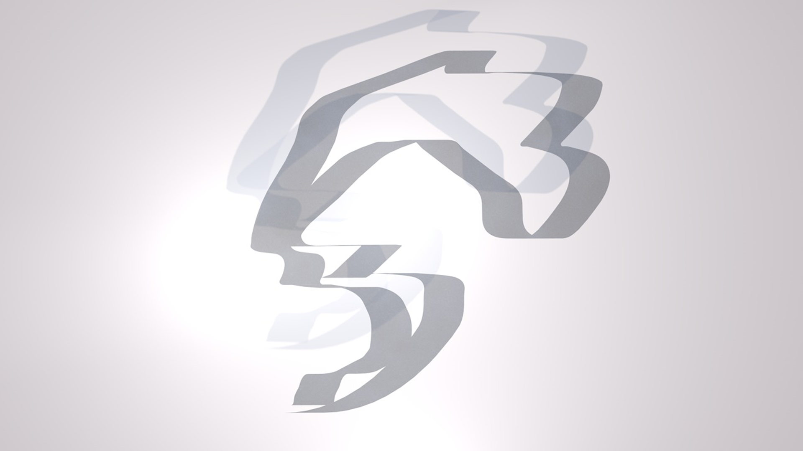
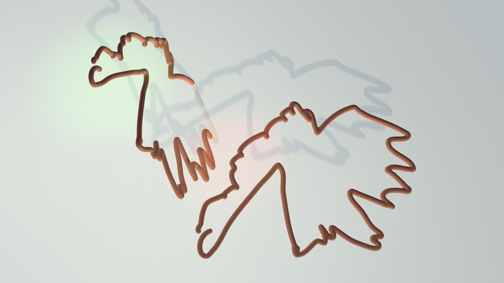
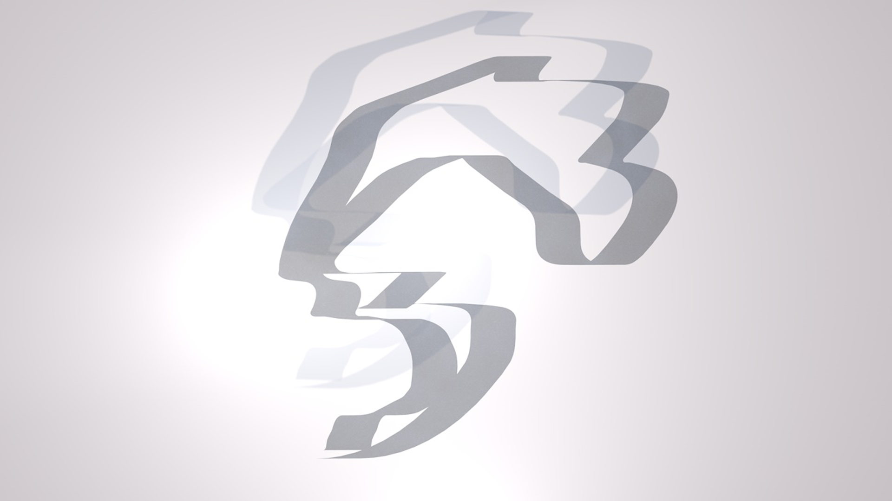
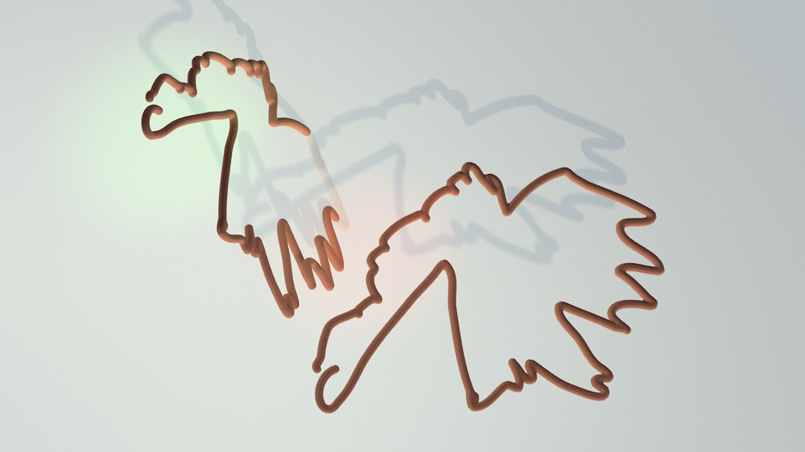

-
johanna gratzer is a female, visual design student from austria, currently participating in an exchange program at the visual communication department at the zürcher hochschule der künste (zhdk) in zürich. she is a fulltime ba student in the communication department at the design academy eindhoven (dae), netherlands.
-
(01)
sanfter stein
typography and digital media
2020
-
the process of forming a typeface transcends into an unknown rhythm, in which letters no longer serve the lingual purpose but result in an ambiguous state. the etymology behind sedimentation serves as an inspiration for the sculpting process of the letters. each letter is assigned a different mineral, referring to the available texture library in cinema 4d. linking the typeface with the geolocation of certain stone quarries, I reflect upon the virtual presence of materials, especially when they are digitally distributed via certain 3d programs. sanfter stein describes itself as the concretion of material that forms in an organ or duct of a body.
 



-
(02)
zwischenraum
film and video
2020
-
this world is bound by fluid relationships: connections between interfaces and users, between the natural and the artificial, humans and their alternate being. zwischenraum is a german noun and brings several definitions with itself. it primarily defines the space between words, but can also define the white space in computer science, a distance between two components or interstitial tissue in anatomy. in this case i would like to define zwischenraum as the fluidity between human-non-human relationships. zwischenraum concludes as a virtual realm, documented in the format of a video, in which sequences contain abstract notions from various streams of information, i.e. articles or screenshots.
 

-
(03)
clay tool and fine pen
mixed media
2019 – 2020
 





-
(04)
mat.color
digital media / uv-maps of 3d objects made in c4d
2019
-
(05)
an idea of interest
ditigal media
2019
-
(06)
perform for me
film and video
2019
-
can we trigger the internet into exhaustion? this short video brings back certain elements from the browser interface and, like in performance, intends to repeat their movement. i tried to neutralize certain elements in their appearance, in order to abstract the context and their meaning. perform for me gives an condensed impression of a live performed act presented at de fabriek in eindhoven as part of the underexposed underground exhibition.